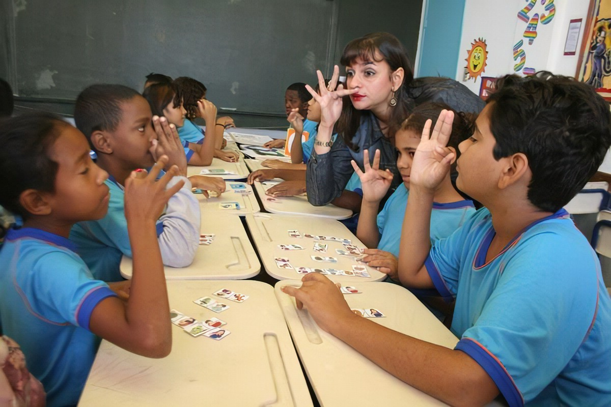

LIBRAS: Língua Brasileira de Sinais
Enquanto língua independente, é um importante recurso que possibilita uma comunicação padronizada entre surdo-surdo e surdo-ouvinte. Por isso, essa língua de sinais é utilizada pela comunidade surda e também por ouvintes como forma de estabelecer uma interação. O surgimento dessa língua de sinais no Brasil ocorreu graças ao trabalho desenvolvido por muitos anos pelo professor francês Hernest Huet.
A Língua Brasileira de Sinais é utilizada somente no Brasil. Nos demais países são adotadas outras línguas, próprias de cada um deles.
Exemplos:
– Língua de Sinais Americana;
– Língua de Sinais Chilena.
Até mesmo em países nos quais o português é o idioma oficial, a língua de sinais adotada é bem diferente daquela que é utilizada aqui no Brasil.
Em Portugal, por exemplo, é utilizada a Língua Gestual Portuguesa – LGP. O motivo disso é que dentro do mesmo idioma (português) há inúmeras variações quanto ao vocabulário e estrutura que precisam ser consideradas.
Conhecimentos
- Libras
- Comunidade Surda
- Identidade Surda
- CODA
- cultura surda